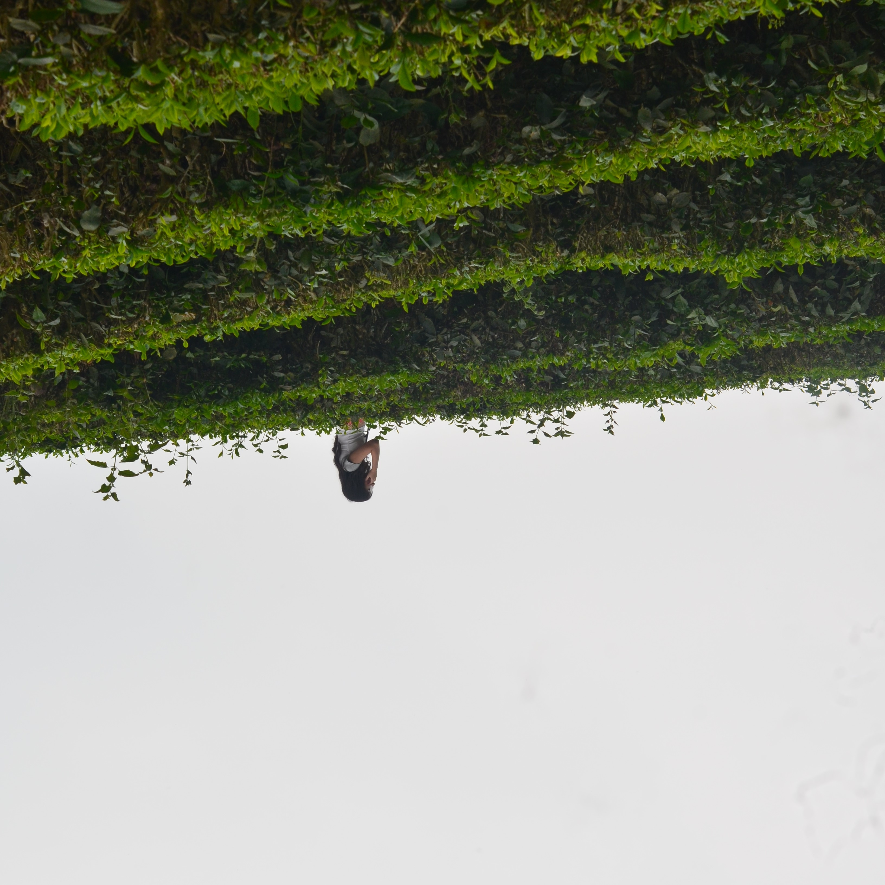

{{ site.header.title }} {{ site.header.subtitle }}
Albums
Albums

Tuyen Quang
Selected photos from school excursion at Tuyen Quang with friends
The Story of Tam and Cam
The Making of Vietnamese Women through Folklore, Poetry, and Modern Media: a Photo Essay

CNN Hội Thao
Selected photos from Amber House at CNN Olympics

The Portal
A Collection of Poems and Short Stories